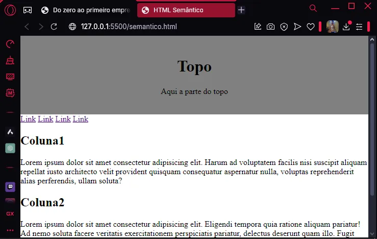

1°MetaTags: Nesta aula, aprendi melhor a como utilizar da forma correta as meta tags e
aprendi quais são as principais meta tags, que são:
<metaname="description" content= "Uma pequena descrição sobre do
que se trata meu site.">
<metaname="keywords" content="Palavras-chave para a ferramenta de
busca identificar sobre do que se trata meu site.">
<metaname="author" content="O nome do criador do site.>
Isso ajuda com a sua reputação dentro dos mecanismos de busca das plataformas, com o tempo seus sites serão
melhor escalados nas páginas "WEB"."
2°Tags de formatação de texto: Também optive mais familiaridade com as tags de maior uso
dentro do HTML, que são:
<b></b>=Negrito. <strong></strong>=Negrito (ênfase). <i></i>=Italico. <u></u>=Sublinhado. <hr></hr>=Linha de divisão. <br></br>= Pular uma linha (quebra de linha). <small></small>= Texto pequeno. <del></del>=Riscado (deletado). <sup></sup>Superior (ex. número exponencial). <sub></sub>=Inferior. <mark></mark>=Marcação (destaca texto).
Conclusão
Com esta aula, aprofundei meus conhecimentos sobre a formatação de texto no HTML, aprendendo
a
utilizar corretamente as meta tags para otimizar a visibilidade dos sites nos mecanismos de
busca. Além disso, desenvolvi mais familiaridade com tags essenciais de formatação, que
permitem estilizar e organizar o conteúdo de maneira mais eficiente. Essas habilidades serão fundamentais para a
construção de páginas web bem estruturadas e acessíveis.
Elementos De Citação
1°<abbr></abbr>: Estamos aprendendo a usar a tag
<abbr></abbr>que serve
para quando o usuário
passar o
cursor do
mouse em cima de determinada palavra, o sistema abrirá um balão explicando o que significa tal palavra,
geralmente mais utilizado para explicar siglas (obs.: essa tag necessita da propriedade title para o
funcionamento correto da tag.), por exemplo:
Estamos aprendendo HTML. No código ficaria da seguinte
maneira:
Estamos aprendendo <abbr title="Hyper Text Markup Language">HTML</abbr>.
Você conhece o início de um site com WWW. No código ficaria da seguinte
maneira:
Estamos aprendendo <abbr title="World Wide Web">WWW</abbr>.
2°<address></address>: Aprendi também que a tag
<address></address> que quer
dizer endereço.
Dentro dessa tag podemos colocar não apenas endereços físicos, mas também podemos utilizá-la para qualquer tipo
de endereço, sejam eles, URL, endereço de e-mail, número de
telefone, mídia social, deixando o endereço em Italico, como por exemplo:
Rua Trevo De Santa Maria, N°1142, Centro, São Paulo.
3°<cite></cite>:Conheci a tag <cite></cite> que é
utilizada para nome de obras como filmes,
poemas, seriados ou quaisquer obras literárias, por exemplo:
O filme Titanic com Leonardo De Caprio.
4°<q></q>: A tag <q></q> é utilizada para fazer uma
citação curta do que algum
personagem de alguma obra literária falou, colocando a fala entre aspas. Utilizando o exemplo da tag passada,
ficaria:
No filme Titanic, com Leonardo De Caprio. Ele disse: Rose, por que eu não consigo subir nessa
porta? Cabe nós dois tranquilos!
(Obs.: Não sei o que Leonardo De Caprio disse no filme, só estou usando um exemplo...)
5°<blockquote></blockquote>: Aprendi que essa tag serve para realizar uma breve
citação do meu proprio texto, essa tag é geralmente utilizada antes do texto para criar uma expectativa em
relação ao texto. Por exemplo:
Personagem de alguma obra literaria!
Esta frase foi utilizada na explicação da tag número 4.
6°<bdo></bdo>: Esta é uma tag bidirecional, que serve para que possamos inverter a
direção do meu texto, ou seja, da esquerda para a direita.
Geralmente é bastante utilizado em idiomas árabes ou orientais.
Conclusão.
Nesta aula, aprendi sobre diversas tags de citação no HTML, cada uma com sua funcionalidade específica
para enriquecer o conteúdo de um site. Descobri que a tag <abbr> pode ser usada para fornecer
explicações sobre siglas e abreviações, facilitando a compreensão do usuário. Também entendi que a tag
<address> não serve apenas para endereços físicos, mas também para contatos digitais, como e-mails,
URLs e redes sociais.
Além disso, conheci a tag <cite>, que é utilizada para referenciar obras, e a tag <q>, que
permite inserir citações curtas dentro do texto. Aprendi que a tag <blockquote> ajuda a destacar
trechos de um conteúdo, criando mais impacto na leitura. Por fim, explorei a tag <bdo>, que possibilita
alterar a direção do texto, sendo útil para idiomas que escrevem da direita para a esquerda.
Com essas tags, posso estruturar e formatar melhor as informações em um site, tornando o conteúdo mais organizado e
acessível para os usuários.
Tags De Comentários
1°<!---->:A tag <!----> é utilizada para criar um comentario meu dentro do meu
codigo para me localizar, como se fossem lembretes, o navegador não vai entender como um código a ser mostrado
na tela do usuario(obs:essa tag serve tambem para quando queremos que uma certa parte do nosso codigo não
apareça para nossos usuarios por um determinado tempo, porem não queremos excluir do código, transformamos essa
tal parte do código em um comentario, assim ocultando essa determinada parte das paginas WEB, assim
podendo mostrar para nossos usuarios quando quisermos), também podemos apenas selecionar a parte do nosso código
que queremos que seja apena um comentario e dar o seguinte comando em nosso teclado:CTRL+K+C . Por
exemplo:
<!--Lembrar de adicionar um título ao meu código-->
2°<p*3>: Esta tag serve para que possamos repetir de forma fácil 3 vezes o que for escrito
após o sinal de maior, o "3" se refere à quantidade de vezes que o conteúdo será repetido.
Links.
Para que servem os links no HTML?
Os links servem para que possamos ir de um documento para o outro, também chamados de HyperLink,
onde vamos clicar em algum texto ou imagem e ele irá nos levar para alguma outra página.
Para criarmos nosso link dentro da página, basta adicionar o seguinte código:
<a href="https://google.com"Descrição do link</a>.
No caso desta tag em específico, iríamos ser direcionados para o site do Google, e esse site iria ser aberto na
aba que o usuário estivesse. Isso seria um link de caminho absoluto. Um caminho absoluto é quando
colocamos o caminho completo de um site para sermos direcionados. (Obs.: Desta forma, sempre que clicarmos nesse
link, ele abrirá o caminho do dele na mesma aba).
Quando indicamos o caminho completo através do href nós chamamos de Link
Absoluto ou URL Absoluta.
Caminhos Relativos
Caminho relativo é quando queremos que o link vá para uma outra página dentro do próprio projeto, dentro do
mesmo documento.
Supondo que nós tenhamos uma outra página chamada "Sobre nós", para que possamos navegar entre elas, basta
utilizar o seguinte código:
Caso seja necessário criar um link para voltar à página principal, usaríamos ../ antes do nome do
nosso
arquivo, ficaria da seguinte forma:
<a href="../index.html">Voltar para a principal</a>
Esses são os links relativos, ou caminhos relativos, por que links relativos?
Porque é em relação ao documento que estamos, então basicamente essa é a diferença entre Link
Absoluto
e Link Relativo:
Link Absoluto: Quando passamos uma URL completa.
Link Relativo: Para que seja possível a navegação dentro do próprio projeto,
indicando
a
pasta e arquivo que queremos.
Conclusão.
Os links são elementos essenciais no HTML, permitindo a navegação entre páginas dentro de um mesmo projeto (links
relativos) ou para sites externos (links absolutos). Com o uso adequado da tag <a>, podemos direcionar os
usuários para diferentes destinos, seja na mesma aba ou em uma nova aba do navegador. Compreender a diferença entre
caminhos absolutos e relativos é fundamental para estruturar corretamente um site e garantir uma navegação
eficiente. Ao dominar esses conceitos, é possível criar páginas bem organizadas e acessíveis, proporcionando uma
melhor experiência ao usuário.
Imagens.
A tag de imagem é diferente das demais, ela não possui fechamento, a tag de imagem é a seguinte:
<img src="Link Da Imagem">
O código ficaria da seguinte forma:
Caso o tamanho da imagem seja muito grande e fôssemos ajustar esse tamanho, seria necessario utilizar dois
atributos para que esse ajuste fosse realizado, esses atributos seriam:
width="o tamanho desejado"
(Obs: Width em português significa largura)
height="o tamanho desejado"
(Obs: height em português significa altura)
Temos um terceiro atributo que acaba se tornando muito importante para quando trabalhamos com imagens, que
seria o seguinte:
alt="descrição da imagem"
Esse atributo permite que o navegador descreva a imagem para pessoas com deficiências visuais. Caso uma pessoa
com deficiência visual venha a realizar o uso de nossa página web, basta descrevermos a imagem dentro das aspas
do nosso código. No caso, poderíamos descrever da seguinte forma: "carro vermelho do ano de 2010 realizando uma
volta rápida dentro de uma pista de corrida". Quando utilizarmos esse atributo, a pessoa que estiver usando esse
sintetizador de conseguirá compreender a imagem mesmo com suas limitações físicas, portanto esse se
torna um atributo bem importante para se utilizar em nosso site, isso também contribui para os mecanismos de
busca compreenderem o que são as imagens que estão em nossos sites, se descrevermos corretamente as imagens isso
poderá ajudar a indexar no Google Imagens e também no ranqueamento do Google.
Por que não utilizar imagens de outros sites? Quando o site está
sendo renderizado no navegador, a imagem que está vindo do caminho absoluto que eu
especifiquei, caso o dono do site do qual pegamos a imagem tire a imagem do ar ou até mesmo delete o arquivo,
essa
imagem irá aparecer quebrada para meu usuário, portanto, não é recomendado utilizarmos imagens de outros sites,
pois às vezes pesa na hora de carregar nossa página web e também pelo fato de não termos controle sobre essas
imagens, podendo inclusive ter direitos autorais, trazendo assim alguns problemas sérios para as pessoas que
utilizarem imagens de terceiros.
Onde conseguir imagens? Existem alguns sites que são bancos de imagens gratuitas, como
por exemplo o PEXELS. Todas as imagens que estiverem
no Pexels são
gratuitas e sem direitos autorais. Outras duas opções muito boas seriam o PixaBay e a
FreePik ou simplesmente ir no Google e escrever banco de imagens
grátis. Todas as imagens que estiverem em qualquer um desses sites serão gratiutas e sem
risco de direito autoral.
Como adicionar imagens locais ao nosso projeto? Para colocarmos imagens locais em nosso
projeto,
seria necessária a criação de uma nova pasta para organizar nossas imagens. Para isso, utilizaremos o nome "img"
para a nova pasta de imagens. Para referenciar essas imagens dentro do nosso projeto, utilizaremos o seguinte
código:
<img src="img/carro.jpg"
Utilizando esse código, as imagens iriam aparecer para nossos usuários...
Para que possamos ajustar o tamanho das nossas imagens, utilizaremos o seguinte comando:
width= "tamanho desejado".
Os kilobytes é uma unidade de medida baixa, porem, 300 kilobytes para uma imagens por exemplo é meu grande, esse
tamanho vai fazer diferença na hora de carregar nosso site, pois o navegador vai estar renderizando o site e
quando chegar na parte da imagens o navegador vai buscar a imagens na pasta e dependendo do peso da imagem o
navegador vai demorar mais ou menos tempo para carregar nossa pagina, portanto, quanto masi leve for a nossa
imagem, melhor vai ser para os navegadores carregarem nossas imagens, masi rapido sera o carregamento da pagina,
tem uma dica para que possamos deixar nossas imagens mais leves e permita nossa pagina carregar mais rapida,
basta pesquisar no Google por compress e o formato da imagem que estamos trabalhando, isso
pode ser realizado quantas vezes quisermos alterando os site, por exemplo: compress jpg
No site Easy Resize, nós podemos determinar o
tamanho máximo que queremos para nossa imagem em peso, e também podemos escolher o tamanho máximo em
remendicionamento em tamanho do arquivo, por esse motivo esse site se torna o mais recomendado. É muito
IMPORTANTE nos preocuparmos com a questão do tamanho da imagem, devemos utilizar sempre o menor
tamanho possível, isso para imagens JPG.
Outro formato que é muito utilizado na web é o formato PNG. Vamos adicionar uma
imagem PNG, porém dessa vez nós iremos criar uma imagem, para isso iremos utilizar
o site PHOTOPEA, esse site simula o PHOTOSHOP
direto do navegador, um photoshop "genérico".
Caso você não tenha nenhum tipo de familiaridade com editor de imagem, talvez seja interessante o Curso De PhotoShop, e após criarmos nossa imagem, iremos adicionar ela ao nosso site
através da tag que já vimos anteriormente.
Temos também um outro formato muito comum que seria o GIF, para adicionarmos um gif ao nosso
site é da mesma forma que colocamos nossas imagens.
Caso quiséssemos usar alguma imagem como ícone para alguma coisa, podemos usar o FlatIcon para
utilizarmos ícones em nossos projetos, os icones diferente das imagens não ossuem problemas com direitos
autorais, por exemplo, não tem como o autor do site, seja o FlatIcon ou qualquer outro site dizer que aquele
icone foi criação dele, por exemplo um icone de estrela, isso se acha em qualquer lugar e voce mesmo pode ter
criado aquele icone, então os icones nao possuem problemas com direitos autorais.
Para adicionarmos um icones ao nosso site, basta selecionarmos a parte do site aonde queremos que apareça o
icone e adicioanr como se fosse uma imagem, da mesma forma que vimos anteriormente. Sabe aquele icone de estrela
que esta la em cima no titulo da pagina, pois é, foi adiconado nessa parte da aula.
Existe um outro recurso muito importante que se chama IMAGEMAP ou MAPA DA IMAGEM, esse
recurso é uma opção para quando queremos que o usuario clique apenas em um determinado icone de uma imagem,
seria possivel utilizar esse recurso com o ImageMap, para utilziar esse recurso seria necessario ir no Google e pesquisar por image map generator, dentro do
site iremos selecionar a imagem que queremos colocar em nosso projeto com essa função e com esse site se torna
possivel determinar a area que queremos que seja clicavel em nosso projeto e inclusive adicionar o link para
aonde queremos que o usuario seja direcionado ao clicar nessa area.
Outra coisa interessante que ocorre também é que as imagens podem se tornar links clicáveis, não só para os
mapeamentos, mas podem ser para qualquer lugar. Para isso, eu usaria o seguinte código: <a
href="equipe/Gustavo.html"> <img src= "img/carro.jpg"
Conclusão.
As imagens desempenham um papel essencial na construção de páginas web, tornando o conteúdo mais atraente e
interativo para os usuários. A utilização correta da tag <img> e de seus atributos, como width, height e alt,
garante que as imagens sejam exibidas corretamente e melhorem a acessibilidade do site.
Além disso, é fundamental evitar o uso de imagens de terceiros sem autorização, tanto para evitar problemas legais
quanto para garantir que os arquivos permaneçam disponíveis e carreguem rapidamente. Utilizar bancos de imagens
gratuitos, como Pexels, Pixabay e Freepik, é uma ótima alternativa para obter imagens de qualidade sem preocupações
com direitos autorais.
Outro ponto relevante é a otimização das imagens para garantir um carregamento rápido da página, utilizando
ferramentas de compressão como Easy Resize e formatos adequados, como JPG, PNG e GIF.
Por fim, as imagens podem ser utilizadas de maneira estratégica dentro do site, seja como ícones, links ou até mesmo
áreas clicáveis através do recurso ImageMap. Com o conhecimento dessas técnicas, é possível criar sites mais
dinâmicos, acessíveis e otimizados para os mecanismos de busca.
Tabelas.
A tag que usamos para criar as tabelas é a <table>, e dentro dela colocaremos o conteúdo
da
tabela. A tag <table> tem um padrão de se trabalhar, que é como se fizéssemos uma tabela
no
papel. Temos uma outra tag chamada <TR></TR> que significa uma linha,
então
quer dizer que eu quero fazer uma linha. Para criarmos uma coluna, basta adicionar a tag
<TH></TH>, nos so utilizamos essa tag na primeira linha, pois sera
onde
estarão o nome das nossas colunas, e para colocarmos os conteúdos dentro das colunas basta criarmos mais uma linha
<TR></TR> porém dessa vez colocamos a tag
<TD></TD>. Feito isso, nossa tabela ficaria da seguinte forma:
Nome
Idade
Peso
Gustavo
21 anos
60 Kg
Nicolas
16 anos
50 Kg
A linguagem CSS é uma linguagem para trabalharmos o estilo do nosso site, porém existem alguns
atributos que são originais da tag TABLE, como por exemplo o WIDTH que
podemos adicioná-lo para determinar a largura da nossa tabela. Temos também o BORDER que seria
para que criássemos borda na nossa tabela.
Listas não ordenadas.
As listas, no geral, são bem fáceis de se trabalhar, basta utilizarmos a tag UL que em português
significa Listas não ordenadas, e dentro dessa tag, sempre iremos ter uma tag filho (Obs: As
tags
filho
são tags que são utilizadas dentro de outras tag, porém que são dependentes daquela tag). A tag
LI que significa list item, ou item da lista, seria da seguinte forma:
Arroz
Feijão
Macarrão
Essa é uma lista não ordenada, pois não tem uma sequnêcia de números.
Já a lista ordenada possui uma ordem de número, ou seja:
Arroz
Feijão
Macarrão
Conclusão.
O uso de tabelas e listas em HTML é fundamental para organizar e exibir dados de forma estruturada em páginas web.
As tabelas permitem a apresentação de informações em linhas e colunas, e podem ser personalizadas com atributos como
WIDTH e BORDER para melhorar a aparência. Já as listas, tanto ordenadas
quanto não ordenadas, ajudam a organizar itens de forma clara e simples. Com a combinação dessas ferramentas e a
aplicação de CSS para estilização, podemos criar interfaces mais organizadas e visualmente atraentes em nossos
sites.
IFrames
A tag IFrame é uma maneira de exibirmos uma pagina HTML dentro de outra pagina
HTML, ou seja, um site rodando dentro do nosso site. A tag ficaria da seguinte formar:
Existe uma forma de removemos essas bordas que fica ao lado dessa pagina externa, porem utilizaria
CSS a tag seria: <style="border:none;">
Outra coisa que se torna possivel com essa tag é colocar videos em nossos sites, bastar irmos no YouTube selecionarmos o video que desejamos adicionar em
nossa pagina web, clicar em compartilhar e escolhermos a opão INCORPORAR e ficaria da
seguinte forma:
Os iframe são utilizados tambem para que quando adicionamos quaisuqer links em nossa pagina, aquele link abra
dentro do nosso projeto, por exemplo: <iframe width="100%" src="" name="Meu-iframe"
title="Iframe de exemplo"></iframe> e selecionaremos algum link de uma pagina propria e
criaremos um target e dentro dessa tag iremos colocar o "Meu-iframe", que ficaria da seguinte forma:
A tag <iframe> é uma poderosa ferramenta para incorporar conteúdos externos dentro de uma página HTML,
permitindo exibir outras páginas, vídeos e até mesmo documentos sem que o usuário precise sair do site. Com essa
funcionalidade, podemos integrar conteúdos como vídeos do YouTube, mapas, ou até mesmo páginas internas do próprio site.
Além disso, podemos personalizar a aparência do <iframe> utilizando atributos como width, height e title, além
de remover as bordas com style="border:none;". Também é possível utilizar target em links para carregar o conteúdo
diretamente dentro do <iframe>, proporcionando uma navegação mais fluida.
Por conta de sua versatilidade, os <iframe> são amplamente utilizados para melhorar a experiência do usuário,
tornando a navegação mais dinâmica e interativa dentro das páginas web.
Formulários
Tambem conhecidos como dados de entradas, os formulários são utilizados para realizar a interação entre nossos
usuarios e nossa pagina web, por exemplo em uma area de login, uma area de cadastro, para eescolherem um item,
realizar um upload de uma imagem e qualquer atividade que envolva a inteeração do usuario com o site.
Geralmente os formularios estao ligados tambem com toda a parta do Back-End, basicamente, é a
comunicação com o banco de dados e toda a logica de programação que funciona por trás das telas...
A tag <Div> quer dizer divisórias, vamos ver uma imagem que ira nos ajudar a entender melhor sobre essas
divisórias:
Imagine que quissesemos fazer um site e que ele esteja disposto da seguinte maneira:
Topo: Nesse topo colcoariamos algum titulo ou algum preve conteudo.
Menu: O menu de navegação seria aonde ficaria os link.
Conteudo: E duas colunas aonde colocariamos conteudos maiores e mais complexos.
A div é como se fosse um bloco, pe uma tag neutra porem é aonde podemos colocar um conteudo, nesse layout
irá precisa de 4 div's, 1 para o topo, 1 para o menu, 2 para cada coluna de conteudo.
Lembrando que a tag div é neutra, ou seja, ela nao significa absolutamente nada, ela so serve para que conseguirmos
adiconar algum tipo de atributo para fazer com que ela seja responsavel pelo layout do nosso site, vamos sempre
colocar um CSS junto com a div para que seja possivel darmos um estilo para nossa pagina, por
mais que nao tenhamos visto ainda nada muito aprofundado sobre CSS vamos ver somente alguns tag
bem basicas de CSS somente para tentar replicar a imagem a cima, para isso seria necessario
criarmos o seguinte codigo:
Dentro da primeira div vamos ter que dizer oque vai ficar nela, que no caso seria o topo, entao para isso fariamos o
codigo:
Para fazermos a parte do menu, vamos simular varios link para o usuario navegar, para isso vamos criar o seguinte
codigo:
Para criarmos as duas colunas de conteudo vamos fazer:
<div>
<h2>Coluna1</h2> p>lorem
</div>
<div>
<h2>Coluna2</h2> p>lorem
</div>
Até o momentos não vamos perceber nenhum mudança, pois so estamos fazendo a utilização de HTML,
e o CSS que cuida da parte do estilo da pagina. Para dar continuidade no nosso projeto, antes da
tag de fechamento head "</head>" vamos ter que adicionar a tag <style></style> e dentro dela
colocar o CSS Incorporado, mas antes de agrescentarmos o CSS Incorporado
vamos ter que dar uma classe para nossas div's, para isso vamos colocar o atributo class.
Agora sim, quando batizamos nossa div com o atributo class, subimos la na nossa tag <style> colocamos um
. e o nome da class, que no caso seria topo e apos isso abrimos e fechamos chaves"{}" para que
dentro dela possamos colocar os valores dos atributos css que vamos querer colocar, ou seja, a div com a class do
nome "topo" vão ter as propiedade que estão dentro das chaves que esta junto com o atributo
.topo.
Lembrando que esse codigo tem que ser feito antes da tag de fechamento do head, o codigo ficaria:
<style>.topo</style>
Agora vamos dar um comando que vai dizer como aquela div deve se comportar, entao vamos colocar um propriedade
chamada background-color: que sera a cor do fundo da nossa div. Vamos tambem dizer que ela vai ter um
padding: de 20pixels, "Vamos conhecer mais sobre padding em CSS".
Apos isso vamos ver que ficou com uma margem entre nosso bloco e o canto do site, para isso vamos adicionar algumas
propriedade que são pradrões, que são: *{box-sizzing: border-box;} e fora da chave prorem dentro da tag Style vamos
colocar um body{margin:0;}. Depois disso vamos alinhar o texto do nosso topo ao meio, para fazer isso vamos colcoar
em baixo do padding, text-aling:center;
Nosso codigo ficaria:
E o resultado seria:

Agora vamos batizar nossa div menu, para isso vamos adicionar o atributo class e colocar o nome de menu, da seguinte
forma:
Apos isso, vamos comecar a dar alguns comandos para a class menu, por exemplo o background-color, que serve para
escolhermos a cor que nossa div ira ficar, vamos escolher a cor #333 que é um cinza chumbo, vamos tambem utilizar o
overflow: hidden; e tambem temos os link, para conseguirmos mexer diretamente nos link vamos colocar mais uma class
menu e a tag "a" como seletora e com o atributo color vamos colcoar a cor white e vamos falar que ele vai ter um
padding de 14pixels por 16pixels, alem disso vamos dizer que o link esta flutuando a esquerta, que o display dele é
em bloco e vamos tirar a linha que fica em baixo do link, com isso tudo nosso codigo vai ficar da seguinte maneira:
E na web resultaria em:
Agora vamos passar para as colunas, para motificar a div colunas vamos batizar a coluna 1 de coluna-50, para
indentificarmos que ela vai ter o tamanho de 50% da tela, apos isso vamos colocar o atributo float: left para a
coluna flutuar a esquerda, width: 50% que vai ser o tamanho da coluna e ela vai ter um padding de 15 pixels,
batizando a coluna 2 tambem de coluna-50 ela ira receber as mesmas propriedades da coluna 1, então o resultado
seria:
Lembrete: A tag DIV é generica, ela nao tem efeito nenhum, ela basicamente serve para
adicionarmos as propriedades para que o conteudo dela se comporte da meneira que desejamos.
HTML Semântico: O HTML semântico tem a ideia de ser uma tag que expressa significado, uma tag
espesifica para entender o conceito do site. Por exemplo, no lugar da tag Div poderiamos usar uma tag semântica que
seria Header, a tag Header quer dizer topo, por mais que não aconteça nenhuma diferença, porem, agora essa parte do
codigo aonde esta escrito Header ta falando a respeito do topo do site, nao importa o nome da class, pois header tem
o signifidcado de topo.
Para o menu do nosso site poderiamos colocar a tag semântica Nav, ou seja, navegação. Dessa forma espessificamos que
essa parte que esta escrito nav se refere para a parte do menu do nosso site, ou seja, para a navegação da nossa
pagina.
E para a parte das colunas, ao inves de utilizarmos uma div poderiamos usar sessão da minha pagina, entao podemos
usar a tag semântica section, ou seja, sessão em portugues.
Existe uma outra tag semântica que é utilizamos bastante que seria a <footer></footer> que utilizamos
para o rodapé do nosso site.
Existe uma tag para espessificarmos caso utilizarmos uma parte de algum artigo, noticia ou algo parecido que seria a
tag <article></article>
AS TAGS SEMÂNTICAS SÃO UM DOS CRITÉRIOS PARA RANKEAR MELHOR UM SITE NOS NAVEGADORES!
A utilização da tag <div> é fundamental para estruturar páginas web, permitindo a organização dos elementos de
forma flexível. No entanto, é importante lembrar que <div> é uma tag neutra, sem significado semântico. Para
tornar o código mais organizado e compreensível, recomenda-se o uso de HTML Semântico, com tags como <header>,
<nav>, <section>, <article> e <footer>, que melhoram a acessibilidade e o SEO da página.
Ao aplicar CSS junto com essas tags, conseguimos estilizar os elementos e garantir um layout mais harmonioso e
funcional. Portanto, entender a diferença entre <div> e HTML Semântico é essencial para desenvolver sites
modernos, responsivos e bem estruturados.
![]()